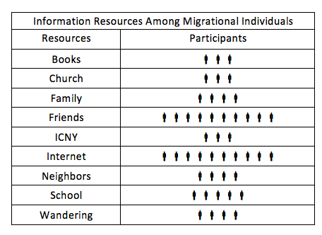

This paper reports findings from a project that investigated the information practices of what are here called migrational individuals, an inclusive term that refers to people in a process of movement, including refugees, exchange students, visitors and immigrants. As travelers, newcomers and strangers, migrational individuals experience cities from a position of otherness, not only in terms of being ethnically or culturally different from natives, but in being unfamiliar with how a particular urban space is organized, and the customs and resources endemic to a host environment. Using accounts from migrational individuals in New York City, this paper provides a theoretical conceptualization of how information is acquired among city newcomers in order to become familiar with a new urban environment. Exploring the information practices of immigrants in the context of learning about a host environment allows for increased understanding of human information behaviour in an understudied, even marginalized community. At the same time, this research contributes to analysis of daily information practices that are so embedded within native routines and habits as to be entirely obscured. In other words, with thick descriptions from outsiders learning about city space, it may be possible to identify information practices used regularly but typically unrecognized by city natives in the daily navigations of urban life. The term information practices is here used to refer not only to the process of locating sources for information, but also the ways in which information is valued, shared and interpreted (Savolainen 2007)
To examine the processes of urban migration is functionally tantamount to examining experiences of being new in city spaces. This involves not only physical presence in an unfamiliar place, but also processes of acquiring and managing information. This section begins with a discussion of theory relevant to the scope of this study's emphasis on daily information practices before moving on to address relevant work on immigration in library and information science research.
A central theoretical framework for this project is taken from de Certeau's work (1984) on the relationship of individuals to structures of culture and politics, particularly in the context of cities. de Certeau's central project in The Practice of Everyday Life is to identify ways of managing the influences and reach of institutions and institutional control. It is a point of fascination for de Certeau to understand how individuals maneuver through everyday life in ways that are individual rather than institutional, improvised rather than indoctrinated. For the purposes of this paper, the most useful of de Certeau's constructs is the notion of tactics, or the daily practices of dealing with the restrictions and apparatuses of dominant cultural institutions. To illustrate the division between tactics and strategies, de Certeau describes the ways in which residents of urban spaces create singular methods (or tactics) of navigating space in ways that are individual, playful, mischievous and bear little resemblance to the planned, official discourses (or strategies) for organizing cities (de Certeau 1984: 93). When the terms tactics and tactical are used in this paper, they are meant in the specific, de Certeauian sense of individualized maneuvering as a way of coping with institutional infrastructure and organization.
To understand tactics in terms of information, Savolainen's work (1995) on everyday life information seeking offers an instrumental understanding of information practices in the context of the everyday. The core concept of everyday life information seeking involves,
the acquisition of various informational (both cognitive and expressive) elements which people employ to orient themselves in daily life or to solve problems not directly connected with the performance of occupational tasks (Savolainen 1995: 266-267).
Critical to Savolainen's work was his contribution to a change in human information behaviour research from user studies situated in a professional or academic context to personal or leisure-based information practices. Such an approach is particularly useful for analysis of the immigrant community (Caidi et al. 2010: 501), in that unlike temporary travellers whose experience of a new urban environment is intended to be extraordinary, the immigrant community seeks to make a host environment ordinary, to gain knowledge of and even ownership over new environments such that they begin to feel like home.
Because migrational individuals are by definition outsiders, studying their experiences in an information context contributes to information behaviour research on marginalized groups. Immigrants are here positioned as marginalized first because as a group they tend to be poorer and possess lower levels of formal education than the native population (Portes and Rumbaut 1990: 248). It is important to point out the problematic nature of making generalized statements about immigrant populations, especially when differences between nationality, circumstances of immigration and length of stay in the host environment are taken into account.
The economic, social and cultural status of immigrants in the United States through an H-1B (non-immigrant) work visa is bound to be remarkably different from those of an illegal immigrant working on a seasonal basis. Also, even when immigrants possess sufficient levels of education, this may not translate to better employment; Komito and Bates (2011) found that Polish immigrants in Ireland were underemployed rather than under-educated. With these caveats, the assessment that the immigration population as a whole tends to be poorer and have less formal education than the native population is particularly true of recent arrivals, who comprise the interview pool in this paper.
A second type of marginalization stems from the fact that the migrational experience is often one of vulnerability and uncertainty, particularly in terms of access to and use of information. Some important work has been done on information practices in an everyday life context for marginalized and underserved communities, including research on health information of HIV and AIDS patients (Veinot 2009, 2010), use of technology by urban youth (Agosto and Hughes-Hassell 2005, 2006, 2009), and information needs of intimate partner violence survivors (Westbrook 2008). Perhaps the most influential has been Chatman's work investigating how surrounding social structures influence the acquisition, use and dissemination of information in marginalized or disadvantaged communities, such as female prison inmates (1999), elderly women in a retirement center (1996) and janitors at a university (1991). Among Chatman's insights on the information practices of disadvantaged and minority populations was the argument that social context has a direct and highly influential impact on the ways that information is used, produced, circulated and hidden (1999). Chatman's research relied on and advocated situating information within the particular social world of the people using it, calling her approach life in the round (1999). In the context of migrational experiences, taking a life in the round approach to information practices requires accounting for spatial-temporal elements surrounding information, and the affordance not only of acquiring information itself, but in becoming adept (or tactical) in information practices related to urban life.
There has been specific research within library and information science scholarship on immigrants and information use. Much of this work focuses on specific services and programmes that libraries are or should be offering to the immigrant community (e.g., Burke 2008), tools that immigrants use to maintain ties with their home countries (e.g., Komito and Bates 2011) or the information networks that inform the immigration process (e.g., Amit and Riss 2007). Fisher and her colleagues have provided some insightful work on the information use of migrant workers in the Pacific Northwest (Fisher 2004) and on immigrants in Queens, New York (Fisher et al. 2004). Both of these projects were centered on the information practices of immigrants related to a particular information institution, namely a local library with English language and acculturation services.
In contrast to research focusing on the use of a particular information resource, this project examines the information practices of migrational individuals upon arrival in a host environment, while taking into account how prior information and exposure to representations of the host environment play out post-migration. Although the extent to which libraries and other information institutions could provide much-needed services to immigrant communities has been recognized (Burke 2008; Public Library Quarterly 2009), research on the information needs of immigrants and the tactics for acquiring information is still limited (Caidi et al. 2010: 521). To address the issue of migrational information practices, particularly in urban systems, it is necessary to understand both the social factors and tactical choices at work in maneuvering through unfamiliar environments. This project seeks to address these phenomenon using qualitative interviews in order to gain a complex, holistic understanding of migrational experiences. Research questions guiding this project include:
This project uses a qualitative approach, drawing on Corbin and Strauss's (2008) grounded theory methods to collect and analyse data. Interviews took place during the summer of 2010 at the International Center in New York, an organization that provides English language and acculturation programmes to refugees, immigrants, exchange students and other foreigners. In total, twelve interviews were conducted. Although additional interviews would have provided increased measures of reliability, this number is in keeping with guidelines for attaining saturation in qualitative research (Guest et al. 2006) and reflects the exploratory nature of this project. Table one presents information on interview participants, including age, sex, nationality (although one participant declined to specify his native country, preferring to state only that he was from Africa) and neighbourhood of residence in New York. Half of the participants were from South Korea, while the remaining interviewees are from six other countries.
On the one hand, this means that experiences of Korean immigrants are over-represented in the analysis that follows. (This may simply reflect the increasing number of Asian immigrants to New York City (Semple 2011).) At the same time, the decision to include a number of nationalities in this study rather than focusing on a single nationality was a deliberate one. As Todd (1999) has argued in his research on youth and information seeking, heterogeneity of backgrounds allows one to 'maximize portrayals and to identify possible theoretical boundaries of change, rather than providing just one cultural perspective' (Todd 1999: 12). Also, there is a risk in generalizing the experience of any particular migrational individual or individuals as representative of a country as a whole. In other words, claiming the accounts of an individual (or a small number of individuals) as representative of a nation as a whole obscures important differences that may exist between members of the same country, such as those based on race, class and sex. The aim of this project is to identify theoretical boundaries around the phenomenology of new urban spaces and to begin to map processes of information practices in urban environments in a way that considers, but does not take as its primary focus, nationality.
To recruit for interviews, members of International Center in New York were approached at the organization's lounge, where members and volunteers are encouraged to engage in informal conversations. Members were invited to participate after an initial determination of basic conversation skills in English, at which point the research agenda and confidentiality was explained and consent obtained. Interviews were semi-structured and ranged from thirty to sixty minutes. All interviews were conducted in English; by virtue of being members at the Center, all participants were non-native English speakers. When participants are quoted throughout this paper, minimal attempts are made to alter their language to conform to standard written English.
During interviews, participants were asked to describe how they gained information about the Center, their local place of residence and about experiences in getting to know New York. Drawing on the critical incident technique (Flanagan 1954), participants were also asked to describe a time when they had been lost in New York City, and whether or not they had then developed a technique for avoiding similar experiences. As a whole, these questions were intended to gain insight into specific processes of tactics for managing different aspects of everyday urban life. Interviews were transcribed and individually coded using NVIVO software. Out of the twelve interviews, two participants (P3, P4) asked not to be recorded and, in those cases, extensive notes were taken during and after the discussion, which were then coded. Using an open coding method (Corbin & Strauss 2008: 59), themes were developed related to tactics of managing newness in city spaces. Although the coding process was guided by an interest in information practices, other themes were allowed to emerge over the course of the researcher immersing herself in interview data.
| Participant Details | ||||
|---|---|---|---|---|
| Sex | Age | Nationality | Location in NYC | |
| P1 | M | 32 | Korean | Elmhurst |
| P2 | M | 28 | Cuban | ABC City |
| P3 | F | 38 | Ukraine | Sheepshead Bay |
| P4 | F | 31 | Dominican Republic | Yonkers |
| P5 | M | 35 | African | Jamaica |
| P6 | M | 33 | Bangladesh | Bronx |
| P7 | F | 28 | Korean | Astoria |
| P8 | F | 25 | Korean | Baybridge |
| P9 | F | 23 | Korean | Midtown |
| P10 | F | 33 | Korean | Kew Gardens |
| P11 | M | 24 | Korean | Jackson Heights |
| P12 | F | 32 | Korean | Flushing |
In addition to answering questions during interviews, participants were asked to draw maps of their neighbourhoods, using a methodology called participatory mapping (Singer et al. 2000). Participatory mapping aims to provide researchers with tangible diagrams of an individual perspective on a resource, concept or place. In a de Certeauian frame, participatory mapping provides a depiction of individual tactics for navigating a neighbourhood, rather than institutional strategies for understanding city space. Because it was impossible to know ahead of time where participants lived, pre-formatted maps could not be used, and interviewees were instead asked to draw their neighbourhoods on blank pieces of paper with colored pencils. No set definition of neighbourhood was provided to participants; instead, they were encouraged to depict whatever their conception of the term neighbourhood indicated. After participants drew maps, they were asked to point out five places that they went to in a given week, and to label those places on their maps. In some cases, participants who had drawn maps on a very small scale (depicting only a block or two) were unable to point out five places on their maps, in which case they were asked to describe places without labelling them on their maps. Although twelve interviews were conducted (with participants from six different countries), one participant (P5) declined to draw a map and thus analysis is based on twelve interviews and eleven maps. Maps were used as an aid to interview questions and a source of data in themselves. As with interview transcripts, themes were allowed to emerge from analysis of maps, guided by an interest in developing an understanding of the information practices of migrational individuals in terms of learning about a host environment. Maps were also examined throughout the process of coding interviews in order to gain additional insights into the information practices of participants used to navigate urban environments.
This section outlines three main themes developed from analysis of interviews and participatory maps, beginning with a discussion of the reported sources of information among participants, and then addressing how personal history shapes perceptions of city space. Finally, the importance of wandering as a tactic for acquiring information about urban spaces is discussed.
Throughout the course of interviews, participants identified a number of information resources in the course of discussions about acculturation in New York City, summarized in table two. Two sources were notable in their overwhelming popularity: All participants referred to using friends and the Internet to find information, where the former category, it should be noted, excludes neighbours and friends from school or the International Center in New York. A typical instance of relying on accounts from other migrational individuals from the same country was P1's description of learning about his neighbourhood in Queens:
my friend, she moved to American nine years already. So she knows everything about America or New York City. So she teaching me about American information, New York City information.
This comment suggests the extensive confidence placed in friends and acquaintances who both share a country of origin and have lived in the host environment.
Friends used by participants as sources for information were not necessarily local; in some cases participants recounted having obtained information about New York before leaving their native country. For example, P6 described learning about Bangladeshi food available in Jackson Heights before he moved to New York, and recounted being told that in New York City,
Jackson Heights is like an Indian place ? Bangladeshi people or Indian people go there, find special items.
Similarly, P12 described choosing Flushing for grocery shopping as a result of conversations in her native Korea, before she had even left for the United States:
my friend [told me] you can buy Korean food [in Flushing], it's cheaper than Manhattan.
In these examples, information acquired before moving is given a certain weight and credence even after arriving in New York. This suggests that participants placed value in sources with whom there is a personal connection, even if those sources have limited or indirect access to the object of inquiry, which in this case was New York.
|  |
The Internet was unanimously referenced as a way of locating information for everything from hours of operation at the Center (P1, P3, P4, P7, P8, P9, P10, P11) to finding theatres with foreign movies (P2) to apartment hunting (P1, P3, P4, P8, P9, P10, P11). Google was the most frequently cited source of information, where P2's description of using Google to find a route to a location for the first time is representative:
in the beginning I search the Internet, the Google, Google map, the address, the directions. I write, I write in my notebook or cell phone. Now, it's no problem.
While Google enjoyed frequent use across participants, in some cases, there was a link between nationality and a specific website. For example, among Korean participants, the website HeyKorean was almost unanimously described (by five out of six Korean interviewees) as a particularly useful resource for tasks such as finding apartments, places of worship and entertainment. In most instances, references to the Internet involved a fairly straightforward process of wanting a particular fact and searching for it online, as in the case of needing to know the Center's hours of operation and then looking for it online (Google was the search engine referenced most frequently for this type of search).
In some cases, however, the Internet served as a highly personalized and tactical information practice. Asked to describe a time when she had been lost in New York, P10 described needing directions in the street and looking for people with smart phones to ask for assistance:
whenever I ask a route, I saw who have iphone. They use their iphone and they teach me.
In this case, making decisions about whom to ask for help was based not on shared ethnicity, age or sex (although these factors likely played a role) but on gaining access to the Internet. In this tactic for managing lostness, technology effectively trumped numerous social and demographic aspects. P4 described using Google translator to locate words in English in the particular context of having been repeatedly frustrated at grocery stores in New York because she was unfamiliar with the English names of certain foods. For this participant, using Google translator became a regular part of preparation for going to the grocery store, largely because she disliked having to ask for help from strangers and because she wanted to avoid repeated trips to the store as a result of not being able to locate needed items. As a resource, the Internet here is used indirectly as a source of information about New York per se, and more as a method of coping with different kinds of lostness. For P10, online access served as a signifier of potential assistance, and for P4 it served as a means of pro-active coping. In both cases, participants were attempting to deal with the vulnerability of non-fluency stemming not only from a lack of English speaking abilities, but also in terms of gaining a sense of familiarity in an urban environment. Thus the Internet served both highly-generalized information practices shared across the participant pool, such as Google searches, and highly-individualized practices, such as personalized routines for grocery shopping.
A second theme that emerged from interviews was the way in which personal experiences shaped perceptions of host environments. P1, for example, had been a mechanic in Korea. Asked about his current neighbourhood in Queens, he mentioned the number of Korean-owned garages, and also commented on what he felt was the surprisingly poor condition of roads in New York. Interestingly, this participant's map (see Figure 1) included street names and was drawn to a scale that would much more easily than other participatory maps, allow for driving directions. Similarly, a Korean exchange student (P9) studying fashion referred to the salons and beauty supply stores she had seen in her three weeks in New York. The same participant also commented with disappointment about the lack of fashionable New Yorkers, saying
I thought that New Yorkers were fashionable. I just watched the New York on television, [but here] it wasn't, only a few of them.
P6, a doctor from Bangladesh, noted the hospitals and medical libraries he had thus far located in the city and mentioned that
one thing that was surprising to me was the obesity. This was not my experience in my imagination.
In each case, the narrative used to describe New York reflected the participants' personal realities and knowledge, demonstrating how information is filtered into a frame of individual history: a former mechanic noticed road conditions; a fashion student noticed the trendiness (or lack thereof) among city residents; a doctor observed health issues. Analysis of maps yielded similar results; the same participant who was disappointed in the lack of high fashion New Yorkers had only been in the city three weeks. Staying with a sister in Midtown, her neighbourhood map (see Figure 2) is notable for the number of tourist attractions depicted, including Carnegie Hall and Central Park. This suggests that her present knowledge of the city was largely one of a tourist aware of sight-seeing stops, rather than the more mundane locations depicted on most participants' maps (laundromats, neighbourhood parks and grocery stores figured heavily). This pattern of framing host environments in terms of personal history is initially an intuitive one, but implies that viewing a new space through a lens of prior experiences is a process that involves not only access to and use of information sources, but an individual interpretation of surroundings drawing on facets of identity such as occupation and education. Also, these comments from participants show that in addition to what people notice about a city, how people describe it is framed in terms of personal narrative.
Finally, several interviewees referenced wandering as a way of becoming familiar with a neighbourhood. Asked to point out places on the map he had drawn of his neighbourhood, P1 explained:
I walk on the street, and then I found here and here, here, here. And then, everywhere I found myself.
These remarks suggest the extent to which a sense of ownership over or comfort with one's surroundings can take place through wandering. Similarly, P6 described walking through his neighbourhood in the Bronx:
Whenever I go to new place, I always like to walk anywhere ? just to wandering. To look for something, to look for anything, which I like. Anything.
Some participants thus devised a form of acquiring information about their neighbourhoods completely outside of established information grounds, using informal, unstructured walks to acquire a kind of personal fluency in their neighbourhoods. It is important here to separate wandering and lostness, where the difference depends precisely on intentionality. The participant quotes included here suggest the extent to which submitting oneself to an unknown environment deliberately as part of a process of self-education can be both pleasant and useful. This is in marked distinction from Lynch's (1960) characterizations of being lost as a moment of panic and disturbance:
let the mishap of disorientation once occur, and the sense of anxiety and even terror that accompanies it reveals to us how closely it is linked to our sense of balance and well-being (Lynch 1960: 4).
In contrast, wandering is here used as a fundamental process of acquiring familiarity. This is not to say that recent immigrants do not experience moments of displacement or confusion. Participants were asked to describe moments of being lost that showed (sometimes quite movingly) a sense of being at a complete loss as to what to do or where to go for help. Wandering, however, was discussed by some participants as a distinct kind of lostness that is both deliberate and constructive, and was referred to by some participants as a useful information practice in terms of becoming acquainted with one's urban surroundings in a way that de Certeau would describe as tactical.
After working through the interview material to identify some of the information practices of migrational individuals, key findings can be summarized in the following way:
The first theme relates directly to the first research question, which sought to identify the practices used by migrational individuals to learn about new city spaces. Research question 2 asked how these practices can be used to understand the phenomenology of urban spaces among newcomers, which relates to the last two themes of personal narrative and wandering. To address these themes examining the literature of urban studies and human information behaviour theory is instructive. This discussion begins by drawing on research from immigrant studies before moving to analysis of information practices and urban space.
To understand the above findings in terms of what it means to be migrational, turning to immigration studies literature is particularly instructive. In their work on immigration in the United States, Portes and Rumbaut (1990) have written that the concentration of economic support within a particular immigrant group (called an ethnic enclave) provide critical forms of resources and support. The roles played by ethnic enclaves among the migrational individuals interviewed here was somewhat inconclusive. Information from one's country of origin was referenced but there were no responses of having strong ties along lines of nationality. Some participants stated that having people from their same ethnic group was unimportant in choosing a place to live (P1, P2, P4, P12). Nearly half of the participants were Korean, but none of the participants lived in the same neighbourhood and in fact resided in three different boroughs, underscoring the difficulty of generalizing from the experience of one migrational individual to another based solely on one factor, such as nationality. This is not to contradict Portes and Rumbaut in their claims about the importance of ethnic enclaves, only to point out that what constitutes ethnic enclaves may be a complex question. Does the fact that most Korean interviewees used the Website HeyKorean to find information about New York justify calling that an (online) ethnic enclave? It has been suggested that with increased access to tools of communication, immigrants may have an easier time maintaining native customs and identities (Portes and Rumbaut 1990: 133; Komito and Bates 2011). In some cases, the rich information sources and sense of community gained online may not only contribute to this eliding of assimilation, but also could constitute a kind of ethnic enclave.
To bridge immigration and information studies requires accounting for how information circulates within communities, where Levitt's work (2001) on immigrants from the Dominican Republic who immigrated to Boston provides some useful terminology. According to Levitt, social remittances refer to the circuits of exchange between home and host environments, including the transmission of trends, ideas, customs and habits (Levitt 2001: 54). Levitt's innovation is to expand on what has become a mainstay of political discourses on immigration, economic remittances, to include other forms of tradeable assets. For immigrants interviewed in this project, social remittances included information traded back and forth between home and host countries about where to live, but also about what to expect. P6, for example, did not have to search on his own for Bangladeshi food and could instead simply follow the advice of friends from home who directed him to Jackson Heights. In other cases, migrational individuals in New York served as the sender rather than receiver of social remittances. When asked what questions his friends and relatives in Cuba had about New York, P2 listed:
What is it like? Is it like the movies? What do people do?
Here, experience in a host environment comes with the ability to shape others' ideas on New York, illustrating the process of social remittances as information. Although Levitt was mostly interested in using the term to refer to the kinds of social capital gained through access to and awareness of trends, customs and fashions of a host environment, social remittances should also be thought of as including the affordances of having access to information about new environments.
In terms of the second theme of analysis, that migrational individuals' perceptions of their neighbourhoods are shaped by personal history, this finding underscores the ways that a city's imageability of a city is determined by individual history. In his study on the urban landscapes of Boston, Jersey City and Los Angeles, Lynch (1960) used the term imageability to refer to 'that quality in a physical object which gives it a high probability of evoking a strong image in any given observer' (Lynch 1960: 9). Given the instances in which participants' perceptions of their neighbourhoods were inflected with individual history, the imageability of a city also draws on personal narrative. Lynch's study focused on understanding how long-term residents of a city think of its shapes, streets and structures, and his text does not provide personal history of his participants beyond very limited demographic information. Lynch's description of the limitations of his research included an acknowledgement of class bias, because he purposefully sought to include 'middle-class, professional and managerial' (Lynch 1960: 150) people as his participants. Partially because of this, the study was 'confined to images as they exist and one point of time. We would understand them far better if we knew how they develop: how does a stranger build an image of a new city?' (Lynch 1960: 157-158). To an extent, this project addresses some of this process of strangers building images of a new city, and goes a step further than Lynch in looking to account for ways that one's personal history shapes the mental cartography of surrounding space, as well as how information practices play into this internal cartography. By gathering narratives from migrational individuals in New York City, it is possible to understand on a granular level how participants develop tactics for learning about new urban environments.
Related to Lynch's comment on understanding imageability as it develops is the question of the extent to which mental maps of a city are malleable. If it is assumed that conceptual maps of cities can be thought of as a way of organizing one's surroundings, it may be that as immigrants become increasingly acculturated, their conceptual maps of city space become less individualized and more homogenous. Portes and Rumbaut (1990) have argued that most immigrants adopt habits, culture and ethics of their host environments, sometimes with starkly negative consequences (Lynch 1960: 189). In de Certeau's (1984) terminology, the process of acculturation is one of being increasingly embedded within structures and apparatuses of hegemonic culture. As newcomers, migrational individuals perceive space around them through a lens inflected with personal experience, and descriptions of their neighbourhoods reflect their particular histories and identities. As time progresses, however, these personal histories may be less and less evident in describing one's neighbourhood and ultimately in their perceptions of the city as a whole. Further research, perhaps taking a longitudinal approach to information practices, would be required to address this analysis thoroughly.
Turning to the third theme of interview findings, references to wandering can be positioned as mechanisms of spatial familiarization, attempting to gain a sense of comfort with one's surroundings. Wandering in this sense is paradoxically purposive (in that it is an effort to learn about one's neighbourhood) and directionless (in that there is no explicit destination marking the culmination of these movements). Phenomenologically, wandering serves as a practices that is deliberated and, at least among participants in this study, individual. In this way, wandering acts as a process of immersing oneself in what initially is experienced as unordered environmental stimuli in order to identify (haltingly, perhaps even randomly) patterns of meaning. Thus wandering may be an important process of learning about a host environment and acquiring a sense of one's neighbourhood ? in de Certeau's (1984) terms wandering allows a newcomer not only to make sense of a neighbourhood but to begin to find ways to make do, to make maps that are individual, personal and poached.
From this analysis, there are several implications to be drawn for library and information science, both in the profession and in scholarship. Regarding the former, it is interesting to note that only one participant (P6) described using the library in conversations about information practices, and in this lone case, the library served more as a place of study (for his upcoming medical license exams) than as a site of information seeking. Library and information science studies that have used the library as a starting point for investigation of information practices of immigrants will by design find that the library figures prominently in their results. In contrast, this study took place outside of the library, drawing on a population without predetermined connections to a particular information institution. Although as a sample size this pool of participants is too small to make generalizable claims about library use, there are some indications from these findings that libraries in urban areas may not be reaching a large portion of immigrants. Keeping in mind that members of the International Center in New York are a self-selected group of migrational individuals looking for some degree of acculturation (at the very least, increased proficiency in English), it is perhaps particularly striking that even among this group, there was almost no mention of using the library in discussions of learning about new urban environments. This suggests that although libraries stand to offer a great deal of resources to this population, there is room for expanded outreach. With a better understanding of local information grounds already in use by immigrant communities, including outreach to some of the more popular English language education programmes, libraries could more effectively publicize their services and increase participation in programmes related to and useful for migrational individuals.
In terms of implications for human information behaviour research, there has been a significant push in user studies to refocus HIB scholarship from information seeking to information use (Dervin 1992). Fisher et al. (2004) have been staunch advocates of this view, using it to buttress their work on information grounds. Although these theoretical structures are insightful, a more apt positioning for the individuals studied here is less about use per se, and (following Chatman 1999) more about information context. Taking de Certeau's position outlining individual methods of dealing with institutional power, the term information tactics can be proposed to refer to individually-devised methods of searching for, acquiring and using information. As a term, information tactics draws on the concept of how information is used in the specific context by developing individual approaches to manage institutional strategies. Looking for people with iphones when in need of directions, making shopping lists with Google translator and wandering through one's neighbourhood are all instances of information tactics. Giving consideration to information in terms of use, as well as personal, spatial-temporal context, information tactics captures the everyday methods of navigating official, planned infrastructure. Put another way, focusing on information tactics within human information behaviour research directs attention to how information is used tactically and individually, while taking into account why it is used in that particular way.
Inherent to the design of this project are several limiting factors. A larger pool of participants would allow for the confirmation, extension and complication of themes developed in this analysis. In addition, although this study sought out a nationally-heterogeneous participant pool, the fact that half of the participants in this project were from the same country (South Korea) effectively weighted interview responses toward a single nationality. Further research could either strive towards greater representation or focus solely on the experiences of a particular nationality. This latter approach would lend itself to taking into account facets of culturally-specific identity that informs community-based construction of cities, institutions and information. In particular, focusing research on specific nationalities could allow for a comparative study of information tactics used by particular groups of immigrants. This could be particularly useful for institutions and organizations looking to serve a specific ethnic or national community. It is argued here that the migrational experience of new urban spaces involves a process of information acculturation that has the potential to homogenize individual ordering of mental space. In order to account for this process of acculturation, a longitudinal approach to the immigration experience would enable analysis of information practices as they develop over time.
Bowker and Star (1999) have argued that the infrastructure of institutions is invisible to those most familiar with them. In contrast, by their very newness, newcomers are more likely to be able to identify the infrastructure of institutions by virtue of not having been natively attuned to the functions and roles of institutions. It is in this sense that this research aims to contribute to discourses on human information behaviour and information use. On the one hand, it is hoped that with better understanding of migrational information tactics it may be possible to provide improved resources to city newcomers. One reason for pursuing the first reseach question was to identify and document practices of migrational individuals in urban areas. With thick description and diverse perspectives, a complex picture of migrational experiences emerges, with practical implications for information professionals interested in providing acculturation services. On the other, however, it is neither assumed nor desired that in addressing information tactics of migrational individuals, the tactics themselves will disappear. Thus research question 2 centred on exploring migrational experiences from a phenomenological perspective, that is, as a process or set of processes of navigating new spaces, framed here through a focus on information. These information tactics are an essential part of modern life, for long-term residents of a small town as well as newcomers to big cities. The analysis in this paper has focused on immigrants in urban environments because it is assumed that in identifying the information tactics of city strangers, it is possible to see deeply embedded and routinely obscured information tactics of city natives. Just as Lynch (1960) suggested that the best way to understand a city's imageability is to investigate the experiences of new residents, the information tactics of strangers can prove illuminating in trying to understand information tactics as practices that take place daily, in ways that are deeply entrenched, taken for granted and hidden, but nevertheless form an essential part of navigating one's environment in everyday life.
The author gives heartfelt thanks to the International Center in New York members and programme administrators for their assistance with this paper. As well, the author thanks anonymous reviewers for their thoughtful and useful comments.
Jessica Lingel is a PhD candidate in the School of Communication and Information at Rutgers University. She has an MLIS from Pratt Institute and an MA from New York University. Her research interests include information practices of marginalized communities, social media technologies and intersections of post modern theory and librarianship. She can be contacted at jlingel@eden.rutgers.edu